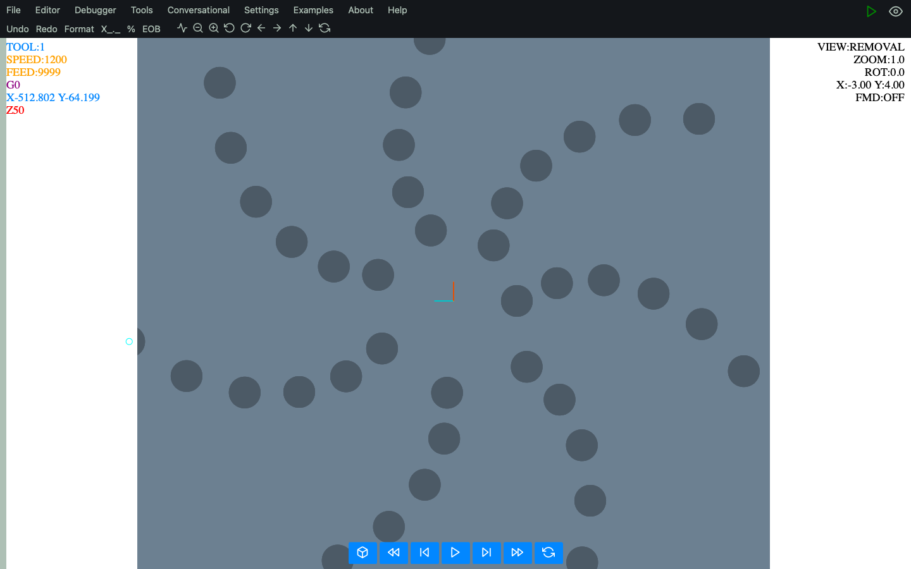

CNC Conversational programming
Conversational shell in CNC Macro Simulator II is designed to be user-friendly, with intuitive
interfaces and
simple commands. This makes it easier for operators to learn and operate, even if they have limited
programming
experience. It also allows operators to quickly and easily perform repetitive tasks such as drilling, tapping,
threading, milling and etc.,
without having to manually enter code.
Lathe conversational >
Mill conversational >
Get the job done easily with CNC Macro Simulator II Conversational
- 7 conversational operations allow you to perform more than 11 milling, drilling, tapping and threading operations
- simple and clear interface
- all operations can be used with patterns
- making operations visible or invisible with one click
- less typing - operations remember data from the previous one of the same type
- change an order of added operations by using 'Sort' button
- adding comments to the operations
- easy to remember - the same composition for all operations: cycle part, localation part (simple or pattern) and tool part
- flexibility - you can manually modify the code generated by the conversion shell
Sometimes simple cycles and patterns are not enough. Therefore, the code generated by the conversation part
can be combined together with macros, subprograms and all the rest of the code contained in the standard
(RS-274).
Below is a small program using the micro commands in conjunction with a macro.
TOOL 1 S1200
#100=0 ( COUNTER )
#101=0 ( X AXIS )
#102=0 ( Y AZIS )
#103=0 ( ANGLE )
WHILE [ #100 LT 40 ] DO 1
ROTATE #103
SHIFT X100
POCKET1 X#101 Y#102 L50 Z-10 C2 F200 P20 O1 Q1
#101=#101 + 8
#102=#102 + 8
#103=#103 + 50
#100=#100+1
END 1
The code snippet above gives this result. Amazing, right?
